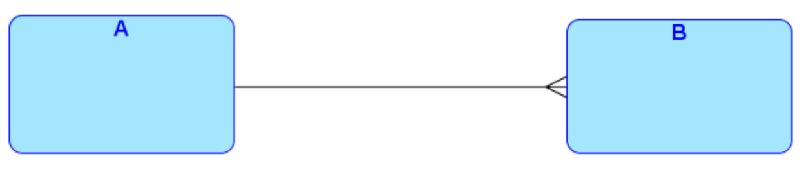

Jeśli strona była dla Ciebie pomocna, możesz wesprzeć mnie w jej utrzymaniu na buycoffee.to/mgarbowski
Model pojęciowy
- Modelowanie nie jest jednorazową czynnością tylko procesem
- Model poddaje się refaktoryzacji
- Związek mówi dużo o encjach które łączy
Związki
- Związki określają nie tylko powiązania, ale również kluczowe cechy
encji
- np. które są podstawowe, a które zależne
- Należy dokładnie analizować model, ponieważ często może być on błędny
Związek jednoznaczny opcjonalny-obligatoryjny
- A jest encją nadrzędną
- B jest encją podrzędną
- Obiekt encji B może istnieć wyłącznie w połączeniu z obiektem encji A
- Obiekt encji A może istnieć samodzielnie, niezależnie od encji B
- Najczęściej występujący związek
- Hierarchia
- byty nadrzędne mogą istnieć samodzielnie
- Np. firma i dział
Encja podstawowa
- Encja z której wychodzą wyłącznie związki opcjonalne
- Byty mające zdolność samodzielnego istnienia
Encja zależna
- Encja z której wychodzi co najmniej 1 związek obligatoryjny
- Byty zależne, mogące istnieć wyłącznie w powiązaniu z innymi
Związek jednoznaczny opcjonalny-opcjonalny
- Zależność hierarchiczna między samodzielnie istniejącymi bytami
- Np. klub i zawodnik
Związek jednoznaczny obligatoryjny-obligatoryjny

- Byty nie mogą istnieć bez siebie wzajemnie
- Modeluje jeden byt złożony o strukturze hierarchicznej
- Kompozycja
- Np. faktura i pozycje na fakturze
- Problematyczne w implementacji
- z takiego modelu powstają 2 tabele w bazie danych
- jeśli w bazie będą takie więzy jak w modelu to nie da się wprowadzić danych
- systemy mogą udostępniać mechanizm opóźnionych więzów integralności - sprawdzane na końcu transakcji
- klucz obcy jest w tabeli podrzędnej (obligatoryjny albo opcjonalny) a w tabeli nadrzędnej nic nie ma
- nie ma możliwości odzwierciedlenia obligatoryjności relacji po stronie tabeli nadrzędnej
- niektóre systemy mają mechanizm check constraint (nie Oracle)
- można to zaimplementować przez trigger - niezalecane ale możliwe
- można to zaimplementować na poziomie aplikacji - gwarantujemy, że
INSERTy będą wprowadzone w dobrej kolejności
Model ER mówi wiele nie tylko o bazie danych, ale też o aplikacji.
Związek jednoznaczny obligatoryjny-opcjonalny
- Rzadko występuje
- często może wynikać z błędnego zamodelowania
- Tylko byty podrzędne mogą istnieć samodzielnie
- Odwrócona hierarchia
- Encja nadrzędna grupuje niezależne byty
- Np. pociąg musi składać się z wagonów, wagon może wchodzić w skład pociągu
- Musi być zapewniony z poziomu aplikacji
- nie może być implementowany przez większość baz danych
Związek jednojednoznaczny opcjonalny-obligatoryjny
- Połączenie w parę bytu samodzielnego z zależnym
- Może opisywać opcjonalny zestaw cech wydzielony jako odrębna encja
- Np. osoba i dokument
- to oddzielne byty
- ale być może atrybuty dokumentu mogłyby być opcjonalnymi atrybutami osoby
- dokument może żyć własnym życiem
- w praktyce często lepiej użyć relacji jeden do wielu (stary dokument wygasa ale zostaje o nim informacja)
- Można celowo wydzielić część atrybutów encji jako oddzielną encję
- może część danych jest jawna, a część poufna i będzie oddzielnie obsługiwana w aplikacji
Związek jednojednoznaczny opcjonalny-opcjonalny
- Połączenie w parę dwóch samodzielnych bytów
- Np. żołnierz i broń
Związek jednojednoznaczny obligatoryjny-obligatoryjny
- Najprawdopodobniej błąd w modelowaniu
- Jeden byt podzielony na dwie części (nie wiadomo czemu)
- Może mieć sens z przyczyn implementacyjnych (wydzielenie części danych)
- Może być uzasadniony przy podtypach (sztuczki implementacyjne)
Związki wieloznaczne
- Mogą wystąpić w modelu, ale ostatecznie muszą zostać zdekomponowane
na związki jednoznaczne
- ze względu na mechanizm klucza obcego
Związki rekurencyjne jednoznaczne
- Odzwierciedla hierarchię w obrębie jednej encji
- np. pracownicy i kierownik (który też jest pracownikiem)
- Musi być z obu stron opcjonalny żeby miał sens (inaczej byłoby
nieskończone drzewo)
- muszą być liście i musi być korzeń
Związki rekurencyjne jednojednoznaczne
- Połączenie bytów tej samej encji w pary
- Np. małżeństwo
- Rzadko używany
Związek identyfikujący
- Inaczej związek kluczowy
- Związek będący częścią unikatowego identyfikatora encji
- dający kontekst identyfikacji w sytuacji, gdy atrybuty encji nie pozwalają na rozróżnianie obiektów
- Wśród atrybutów encji nie ma takich, które ją jednoznacznie identyfikują
- Obiekty encji różnią się tylko związkami
- W konwencji to kreska poprzeczna na linii
- Np. faktura i pozycje na fakturze
- pozycję identyfikuje numer na fakturze i faktura do której należy
- Taka encja nigdy nie ma zdolności samodzielnego istnienia, zawsze
będzie zależna
- tzw, encja słaba
- nie ma zdolności samodzielnego istnienia ani samodzielnej identyfikacji
- Encja może nawet nie mieć atrybutów jeśli tylko łączy inne encje w związku identyfikującym
Encja słaba
- Encja połączona z encją nadrzędną związkiem identyfikującym
- Oznacza byty nie mające zdolności samodzielnej identyfikacji
- Rozróżnialne jedynie w kontekście bytów nadrzędnych
Podtypy
- W ramach encji chcemy wprowadzić dodatkowy podział
- np. osoby -> dorośli i dzieci.
Wskazania do wyróżnienia podtypów
- Są różnice strukturalne
- podtypy niosą inne informacje
- różna obligatoryjność atrybutów
- Różnice powiązań
- obligatoryjność związków podtypów
- Związki między podtypami
- Różnice funkcjonalności w operacjach na podtypach
- model ER służy również jako słownik pojęć
- można wprowadzić podtyp po to żeby wprowadzić odpowiednie pojęcie
- różne podtypy będą inaczej obsługiwane w aplikacji - lepiej jest to określić od razu w modelu zamiast w UI
- model pojęciowy to nie tylko baza danych! dotyczy całego systemu
- Pozwala wyróżnić stany obiektów
- np. dziecko / dorosły
Wskazania do wyróżniania nadtypów
- Może pojawić się konieczność nie podzielenia jednego typu na wiele podtypów, tylko połączyć istniejących encji nadtypem
- Musi istnieć odpowiedni sens pojęcia nadrzędnego
- sam fakt podobieństwa atrybutów to jeszcze za mało
- Powiązania z tymi samymi encjami
- Podobna struktura informacyjna
- Podobny sposób identyfikacji
- Podobne operacje na encjach (funkcjonalność)
Podtypy pełne
Jeśli może istnieć obiekt nie należący do żadnego z określonych podtypów, to należy dodać obejmujący je podtyp.
Podtypy rozłączne
Konwencjonalnie podtypy są rozłączne, jeśli podtypy się pokrywają, to należy stworzyć oddzielny podtyp dla przecięcia.
Drzewo podtypów
Głębsza hierarchia podtypów o strukturze drzewiastej, podtypy dzielą się na podtypy
Podtypy ortogonalne
- Zgodnie z konwencją należy wyspecyfikować wszystkie kombinacje
podtypów ortogonalnych
- wszystkie przecięcia
- to jest kwestia notacji którą wybraliśmy, a nie ogólne prawidłowości w modelowaniu
- Można zastosować sztuczkę
- wprowadzić kilka równoległych encji podzielonych na ortogonalne zestawy podtypów
- połączone związkami jednojednoznacznymi obligatoryjnymi
- dla sytuacji, w której rozwiązanie z jawnymi kombinacjami byłoby bardzo niewygodne
Stabilność podziału na podtypy
- Stałe
- tak po prostu jest, nie ulegnie zmianie
- Stabilne
- możliwe do modyfikacji
- np. sposoby płatności
- zmiana i tak wymaga znacznej zmiany systemu
- Niestałe
- np. stanowiska w firmie
- Im bardziej stabilny podział tym większy sens ma modelowanie z użyciem podtypów
Stabilność przynależności do podtypów
- Stała
- np. rodzaj pojazdu
- Stabilna
- np. płeć
- Zmienna
- np. stan dokumentu
Łuki
- Łuk oznacza wykluczające się związki
- związki nie muszą być niezależne od siebie
Reguły stosowania łuków
- Może łączyć związki o takiej samej obligatoryjności
- dla opcjonalnych - może conajwyżej obowiązywać 1
- dla obligatoryjnych - musi być dokładnie 1 w danym momencie
- Wszystkie są identyfikujące albo żaden nie jest identyfikujący
- Jedno zakończenie związku może być w tylko jednym łuku
- Łuk nie może łączyć związków dotyczących różnych encji
- w tym różnych podtypów
- Łuki z reguły łączą wielokrotne zakończenia związków (po
stronie encji podrzędnej)
- nakłada się odpowiednie ograniczenia na klucze obce w obrębie jednej tabeli
Refaktoryzacja
Dekompozycja związków wieloznacznych
- Związki wieloznaczne w końcu muszą zniknąć z modelu
- nie da się ich zaimplementwoać w relacyjnej bazie danych
- Dekompozycja związków wieloznaczynch jest pierwszym krokiem w refaktoryzacji modelu
- Pod tym samym związkiem wieloznacznym mogą się kryć odmienne
rezultaty
- trzeba się nad tym poważnie zastanowić przy dekompozycji
- W środek wstawia się encję łączącą i zamienia związek wieloznaczny na związki jednoznaczne z obiema łączonymi encjami
- Zawsze z encji łączącej wychodzi linia ciągła
- nie może istnieć bez powiązania z obiektami łączonych encji
- przejście jest mechaniczne.
- Identyfikatorem encji łączącej jest para kluczy łączonych encji
- encja nie ma atrybutów, jest identyfikowana przez parę związków
- Nie każdy problem daje się tak zamodelować
- np. pracownik może przynależeć do projektu tylko raz, na jeden sposób
- możemy chcieć wyrazić to, że pracował na różnych stanowiskach
- wtedy nie wystarczy para kluczy pracownika i projektu, pojawiają się atrybuty związku
- W encji łączącej musi wtedy być odrębny klucz, który rozróżnia powiązania między sobą.
- Obiekt encji łączącej może jedak mieć sens samodzielnie
- może nie być encją słabą, tylko zależną
- mieć zdolność samodzielnej identyfikacji
- Może być rozwiązanie hybrydowe
- jeden z kluczy obcych wchodzi w skład klucza głównego
- encję łączącą identyfikuje jakiś jej własny atrybut i kontekst z jednej z łączonych encji
- np towar, pozycja na fakturze i faktura
- Może okazać się, że struktura jest jeszcze bardziej skomplikowana
- trzeba wprowadzić więcej niż 1 encję łączącą
- np. student, lista przedmiotu, realizacja przedmiotu, przedmiot
- Dekomopozycji związku wieloznacznego nie da się tak naprawdę zautomatyzować
Łuki i podtypy
- Przykład z naprawą wewnętrzną i zewnętrzną
- zamiennie można zastosować łuk i podtypy naprawy
- podtypy pozwalają wprowadzić inne atrybuty dla wewnętrznej naprawy i inne dla zewnętrznej
- można to zrobić w drugą stronę - wprowadzić nadtyp z drugiej storny - i firma zewnętrzna i wewnętrzny zespół są podtypami serwisu
- Łuki zawsze można zamienić na podtypy ale nie w drugą stronę
- ze względu na atrybuty podtypów
- Wprowadzenie nadtypu zawsze redukuje liczbę związków w modelu
- może uprościć model
Przykład - baza teleadresowa
- Związek jednoznaczny opcjonalny podtypu ze swoim nadtypem
- często przydatne
- modeluje jakąś drzewaiastą hierarchię
- kompozyt
- Jeśli wykryliśmy że podział na podtypy jest zmienny to modelowanie za pomocą podtypów może być niewłaściwe
- Encja słownikowa
- duża elastyczność kosztem mniejszej precyzji
- informacja i rodzaj informacji
- można dodać nowe rodzaje przez wpis do określonej tabeli
Metamodel
Dane słownikowe
- Dotyczące świata zewnętrznego
- podział administracyjny
- modele, marki samochodów, sprzętu
- duże zbiory pozyskiwane ze źródeł zewnętrznych
- Dane wewnętrzne konfiguracyjne, parametry
- typy dokumentów, nazwy pól
- struktura organizacyjna
- parametry systemu / aplikacji
- wprowadzane przez administratorów systemu
- Encje słownikowe mogą tworzyć własną hierarchiczną strukturę
- Najczęściej ten zewnętrzny model powiela się we własnym modelu
Metamodel
- Jest rozwinięciem idei encji słownikowych
- Często jest bardziej złożony od modelu danych operacyjnych
- Pozwala na kontrolę poprawności danych operacyjnych
- Ułatwia, organizuje konstrukcję aplikacji
- Pozwala na zbudowanie mechanizmów interpretacji danych operacyjnych
- Nadmiarowe związki mogą wprowadzić niespójność danych
- Metamodel często może być dużo bardziej rozbudowany niż model danych operacyjnych
- Metamodel odzwierciedla wiedzę o tym jak wygląda świat rzeczywisty
- Do metamodelu można dodać narzędzia do interpretacji wyników
- np. jako dodatkowa powiązana encja
- wiedza też może być reprezentowana w metamodelu
Model wielowymiarowy (gwiazda)
- Stosowany w hurtowniach danych, bazach analitycznych
- Po środku encja operacyjna reprezentująca fakt z określonymi miarami
- Dookoła tabele wymiarów
- fakt można interpretować jako punkt w wielowymiarowej przestrzeni
Szablony analityczne
Wzorce projektowe dla projektowania baz danych, nie trzeba wymyślać koła na nowo
Obiekt złożony - kompozyt
Modeluje hierarchiczną strukturę

Złożona identyfikacja
- Kiedy obiekt może być identyfikowany na wiele sposobów
- Nr dowodu / pesel / nr paszportu
- Obiekt, identyfikator i schemat identyfikacji
Substytucja obiektów
- Obiekt aktywny i archiwalny jako 2 podtypy
- Pozwala przechowywać historię obiektu
Wersjonowanie
Rozwbudowanie substytucji
Istota obiektu a dane

- Związek odwróconej hierarchii
- Np. osoba i wiele tożsamości
- Unikalny identyfikator osoby nie niesie żadnej informacji o świecie rzeczywistym
- Nie trzeba w ogóle tworzyć tabeli dla osoby
- Przykład, kiedy z encji nie powstaje tabela
Klasyfikacja
Obiekt, klasa, system klasyfikacji
Grupowanie / równoważność
- Obiekt, grupa, podmiot
- Kiedy jeden podmiot interesuje inny podział obiektów na grupy niż pozostałe podmioty
Dynamiczne podtypy
- Obiekt, podtyp, atrybut podtypu, atrybut
- Metamodel, encje słownikowe
Podsumowanie
- Pierwszy model jest tylko szkicem
- Nie istnieje jedynie poprawny model
- Podstawowa zasada - modyfikowanie i ulepszanie
- Podstawowe problemy już zostały rozwiązane - korzystamy z szablonów